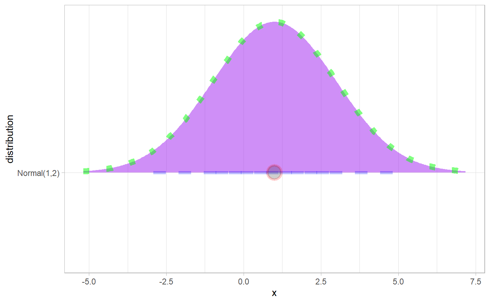

These scales allow more specific aesthetic mappings to be made when using geom_slabinterval()
and stats/geoms based on it (like eye plots).
scale_point_colour_discrete(..., aesthetics = "point_colour") scale_point_color_discrete(..., aesthetics = "point_colour") scale_point_colour_continuous( ..., aesthetics = "point_colour", guide = "colourbar2" ) scale_point_color_continuous( ..., aesthetics = "point_colour", guide = "colourbar2" ) scale_point_fill_discrete(..., aesthetics = "point_fill") scale_point_fill_continuous( ..., aesthetics = "point_fill", guide = "colourbar2" ) scale_point_alpha_continuous(..., range = c(0.1, 1)) scale_point_alpha_discrete(..., range = c(0.1, 1)) scale_point_size_continuous(..., range = c(1, 6)) scale_point_size_discrete(..., range = c(1, 6), na.translate = FALSE) scale_interval_colour_discrete(..., aesthetics = "interval_colour") scale_interval_color_discrete(..., aesthetics = "interval_colour") scale_interval_colour_continuous( ..., aesthetics = "interval_colour", guide = "colourbar2" ) scale_interval_color_continuous( ..., aesthetics = "interval_colour", guide = "colourbar2" ) scale_interval_alpha_continuous(..., range = c(0.1, 1)) scale_interval_alpha_discrete(..., range = c(0.1, 1)) scale_interval_size_continuous(..., range = c(1, 6)) scale_interval_size_discrete(..., range = c(1, 6), na.translate = FALSE) scale_interval_linetype_discrete(..., na.value = "blank") scale_interval_linetype_continuous(...) scale_slab_colour_discrete(..., aesthetics = "slab_colour") scale_slab_color_discrete(..., aesthetics = "slab_colour") scale_slab_colour_continuous( ..., aesthetics = "slab_colour", guide = "colourbar2" ) scale_slab_color_continuous( ..., aesthetics = "slab_colour", guide = "colourbar2" ) scale_slab_fill_discrete(..., aesthetics = "slab_fill") scale_slab_fill_continuous(..., aesthetics = "slab_fill", guide = "colourbar2") scale_slab_alpha_continuous( ..., limits = function(l) c(min(0, l[[1]]), l[[2]]), range = c(0, 1) ) scale_slab_alpha_discrete(..., range = c(0.1, 1)) scale_slab_size_continuous(..., range = c(1, 6)) scale_slab_size_discrete(..., range = c(1, 6), na.translate = FALSE) scale_slab_linetype_discrete(..., na.value = "blank") scale_slab_linetype_continuous(...) scale_slab_shape_discrete(..., solid = TRUE) scale_slab_shape_continuous(...) guide_colourbar2(...) guide_colorbar2(...)
| ... | Arguments passed to underlying scale or guide functions. E.g. |
|---|---|
| aesthetics | Names of aesthetics to set scales for. |
| guide | Guide to use for legends for an aesthetic. |
| range | a numeric vector of length 2 that specifies the minimum and maximum size of the plotting symbol after transformation. |
| na.translate | In discrete scales, should we show missing values? |
| na.value | When |
| limits | One of:
|
| solid | Should the shapes be solid, |
A ggplot2::Scale representing one of the aesthetics used to target the appearance of specific parts of composite
ggdist geoms. Can be added to a ggplot() object.
The following additional scales / aesthetics are defined for use with geom_slabinterval() and
related geoms:
scale_point_color_* Point color
scale_point_fill_* Point fill color
scale_point_alpha_* Point alpha level / opacity
scale_point_size_* Point size
scale_interval_color_* Interval line color
scale_interval_alpha_* Interval alpha level / opacity
scale_interval_size_* Interval line width
scale_interval_linetype_* Interval line type
scale_slab_color_* Slab outline color
scale_slab_fill_* Slab fill color
scale_slab_alpha_* Slab alpha level / opacity. The default settings of
scale_slab_alpha_continuous differ from scale_alpha_continuous() and
are designed for gradient plots (e.g. stat_gradientinterval()) by ensuring that
densities of 0 get mapped to 0 in the output.
scale_slab_size_* Slab outline line width
scale_slab_linetype_* Slab outline line type
scale_slab_shape_* Slab dot shape (for geom_dotsinterval())
See the corresponding scale documentation in ggplot for more information; e.g.
scale_color_discrete(), scale_color_continuous(), etc.
Other scale functions can be used with the aesthetics/scales defined here by using the aesthetics
argument to that scale function. For example, to use color brewer scales with the point_color aesthetic:
scale_color_brewer(..., aesthetics = "point_color")
With continuous color scales, you may also need to provide a guide as the default guide does not work properly;
this is what guide_colorbar2 is for:
scale_color_distiller(..., guide = "colorbar2", aesthetics = "point_color")
Other ggplot2 scales: scale_color_discrete(), scale_color_continuous(), etc.
Other ggdist scales:
scale_colour_ramp
Matthew Kay
library(dplyr) library(ggplot2) # This plot shows how to set multiple specific aesthetics # NB it is very ugly and is only for demo purposes. data.frame(distribution = "Normal(1,2)") %>% parse_dist(distribution) %>% ggplot(aes(y = distribution, dist = .dist, args = .args)) + stat_dist_halfeye( shape = 21, # this point shape has a fill and outline point_color = "red", point_fill = "black", point_alpha = .1, point_size = 6, stroke = 2, interval_color = "blue", # interval sizes are scaled from [1, 6] onto [0.6, 1.4] by default # see the interval_size_range parameter in help("geom_slabinterval") interval_size = 8, interval_linetype = "dashed", interval_alpha = .25, # fill sets the fill color of the slab (here the density) slab_color = "green", slab_fill = "purple", slab_size = 3, slab_linetype = "dotted", slab_alpha = .5 )